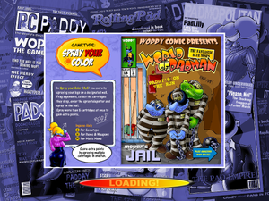
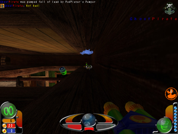

World of Padman
Dieser Artikel wurde für die folgenden Ubuntu-Versionen getestet:
Ubuntu 16.04 Xenial Xerus
Zum Verständnis dieses Artikels sind folgende Seiten hilfreich:
World of Padman 
 (WoP) ist ein unblutiger Multiplayer Ego-Shooter im Comic Design für Jung und Alt. Mit unterschiedlichsten Waffen (z.B. Wasserpistole, Handpuppe) schlägt man sich als Zwerg durch verschiedene, meist riesige Räume.
Durch die Einstufung in USK12 konnte WoP Einzug in die eSport Schulmeisterschaften erhalten.
(WoP) ist ein unblutiger Multiplayer Ego-Shooter im Comic Design für Jung und Alt. Mit unterschiedlichsten Waffen (z.B. Wasserpistole, Handpuppe) schlägt man sich als Zwerg durch verschiedene, meist riesige Räume.
Durch die Einstufung in USK12 konnte WoP Einzug in die eSport Schulmeisterschaften erhalten.
PADMAN ist der Feder des Comiczeichners und Illustrators Andreas Endres alias ENTE entsprungen und Held des gleichnamigen Comic-Strips. ENTE ist neben den Cartoon-Motiven unter anderem für das Grunddesign und einige der Maps verantwortlich.
|  |  |
| Loading... | Spielszene |
Installation¶
Offizielles Paket¶
Die Installation geschieht mit Hilfe des offiziellen Paketes "Unified Zip", welches von indiedb heruntergeladen und anschließend entpackt [1] wird. Nach der Installation muss noch wop.i386 oder wop.x86_64, ausführbar [2] gemacht werden. Danach kann man das Spiel über diese Datei starten [9].
Patch¶
Anschließend den aktuellen WoP-Patch von der indiedb herunterladen und entpacken [1]. Die enthaltenen Dateien und Ordner in das Installationsverzeichnis kopieren.
Auf Wunsch einen Menüeintrag [3] vornehmen.
Hinweis!
Fremdpakete können das System gefährden.
Fehlende Libraries ab Xenial¶
Falls das Spiel nicht starten sollte und es in der Konsole zu folgender Fehlermeldung kommt:
./wop.x86_64: error while loading shared libraries: libSDL-1.2.so.0: cannot open shared object file: No such file or directory
müssen die fehlenden Libraries nachinstalliert werden:
1 | sudo apt-get install libsdl1.2debian |
Desura¶
Das Spiel kann über die Internetseite oder den Client installiert [8] und über diesen gestartet werden.
Bedienung¶
Die Steuerung erfolgt, wie in anderen Shootern, durch Tastatur und Maus. Die Tastenbelegung kann über das Menü angepasst werden (Setup -> Controls).
| Bedienung | |
| Menüpunkt | Beschreibung |
| "Create" | Einen eigenen Server erstellen, z.B. um lokal gegen Bots zu spielen. |
| "Join" | Einem Spiel beitreten. Über den Unterpunkt Specify kann einem eigenen Server beigetreten werden. |
| "Setup" | Grafik Optionen, Tastenbelegung et cetera verändern. |
| "Mods" | Modifikationen laden. |
Server¶
Mit dem Spiel können Listen Server und Dedizierte Server verwendet werden. Damit andere dem eigenen Server über das Internet beitreten können, muss man Ports weiterleiten. Standardmäßig ist dies der Port 27960 UDP.
Listen Server¶
Über "Create" erstellt man einen eigenen Server. Nachdem man die gewünschten Einstellungen vorgenommen und eine Karte ausgewählt hat, wird mit "Fight" das Spiel gestartet. Mitspieler betreten den Server über "Join -> Specify" und geben dort IP und Port des Servers ein. Den Server kann man teilweise über das Menü ( Esc ) im Spiel steuern.
Dedizierter Server¶
Dieser Server wird mit Skripten über die Konsole [6] gestartet [9] und benötigt keine grafische Oberfläche.
Wenn man den Server mit der Option dedicated 2 startet, so können andere Spieler ihn in der Serverliste sehen.
wopded.i386 +set dedicated 2 +set net_port 27960 +exec server-allgametypes.cfg
Hinweis:
Nutzer eines 64-Bit Systems verwenden anstelle von wopded.i386 an dieser Stelle wopded.x86_64.
Es kann auch ein Startskript [7] mit den Parametern wie oben angelegt werden:
1 2 3 | #!/bin/sh cd /usr/local/games/WoP ./wopded.i386 +set dedicated 2 +set net_port 27960 +exec server-allgametypes.cfg |
| Server Optionen | |
| Option | Beschreibung |
+set dedicated 2 | Ob der Server in der öffentlichen Serverliste auftauchen soll. 1 für LAN Modus verwenden. |
+set net_port 27960 | Der verwendete UDP Port, 27960. |
+set com_hunkMegs 256 | Verwendeter RAM - hier 256 MB |
+exec server-allgametypes.cfg | Lädt die angegebene Konfigurationsdatei und setzt somit Einstellungen und lädt eine Karte. |
Konfigurationsdatei¶
Eine Konfigurationsdatei beinhaltet sowohl Einstellungen für den Server als auch Befehle, z.B. um eine Karte zu laden. Innerhalb des Unterordners wop im Installationsverzeichnis findet man einige, ausführlich dokumentierte, Beispiele.
Für einen eigenen Server erstellt man eine neue Datei, z.B. server-ubuntuusers.cfg und passt das Startskript entsprechend an.
Zusätzliche Karten¶
Zusätzliche Karten sind im WoP Editing Forum zu erhalten.
Es existieren ebenfalls mehrere Mapping Anleitungen um eigene Karten zu erstellen.
Um die Karten spielen zu können, muss man die pk3-Dateien nach ~/.padman/wop/ verschieben. Danach kann man die Karte im Spiel mittels des Menüs auswählen.
Tastenkürzel¶
| Tastenkürzel | |
| Taste(n) | Beschreibung |
| W + A + S + D | Steuerung der Spielfigur |
| 0 - 9 | Waffe wechseln. |
| C | Ducken |
| Springen | |
| T | Chatfenster, senden und beenden mit Enter. |
| F11 | Bildschirmfoto erstellen. Dieses wird im Homeverzeichnis unter .padman/wop/screenshots/ gespeichert. |
| ⇧ + Esc | Konsole öffnen/schließen |
| M | Musikplayer |
| H | Hilfe |
Infobox¶
| World of Padman | |
| Originaltitel: | World of Padman |
| Genre: | Shooter |
| Sprache: | |
| Veröffentlichung: | 2007+ |
| Entwickler: | Padworld Entertainment |
| Systemvoraussetzungen: | - |
| Medien: | Download |
| Läuft mit: | nativ |
- Erstellt mit Inyoka
-
 2004 – 2017 ubuntuusers.de • Einige Rechte vorbehalten
2004 – 2017 ubuntuusers.de • Einige Rechte vorbehalten
Lizenz • Kontakt • Datenschutz • Impressum • Serverstatus -
Serverhousing gespendet von